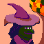
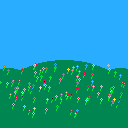

I participated in Octobit 2017 this past month. I really enjoyed being part of Octobit 2016 and was happy to join the fun again this year.
|  | ||||||
|  | ||||||
As with last year, I really enjoyed being part of a group of artists. Each of us had a different style and interpretation of the themes. I was especially proud to be in the mix with so many talentend people in Retronator's coverage of Octobit 2017.
I started this one in Dotpict on my phone and finished it on my iPad in Pixaki. The palette is from trying to import a PICO-8 image into Dotpict, which must sample the colors differently from how I expected, because this didn't end up being in the PICO-8 palette.
Based this one on Chris Hadfield's video of his David Bowie cover in space.
A deer fawn.
Making cheese.
A bold jumper spider.
I drew this one at 8x8 pixels because I knew I wanted to make a longer animation than I usually do.
A corn husk doll.
This one is in two parts. For part one I finished a drawing I started in December 2014, but never shared before.
For part two I drew a sushi stand from the Tsukiji outer fish market.
I did some programming to procedurally generate this one. Felt a little lazy, but took just as long as my normal drawings.
I extended my flora code with a butterfly animation I drew by hand on my iPad in Pixaki.
More code to generate this one. This time I drew a fish and had them swim around in a loop.
This doodle had a hardware component. The spider webs population measured by the spook-o-meter reflects the pressure on a sensor.
Some of my favorite enoki mushrooms in shabu-shabu broth.
An angel food cake for my grandfather who would have turned 100 that day.